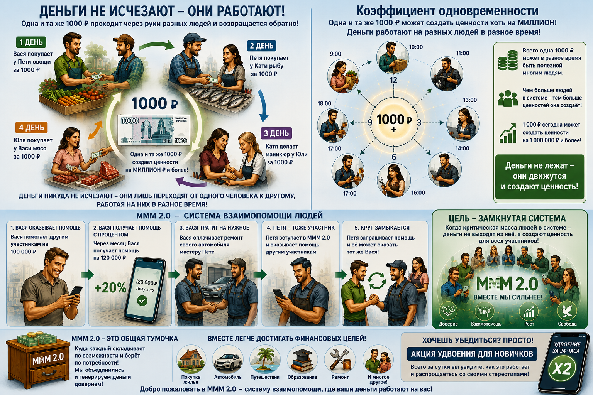

Регистрация в телеграм-боте
Вернуться в раздел "Суть и цель МММ 2.0"

Мы живем в мире в котором постоянно приходится тратить деньги: как только мы их получаем, мы их тут же тратим! И, как правило, траты с каждым разом лишь увеличиваются: деньги всё время кончаются, нам их не хватает. Именно поэтому человек привык относиться к деньгам как к чему-то конечному.
Хотя в действительности это совсем не так.
Приведем простые примеры, которые показывают, как работают деньги и что нужно делать, чтобы они не кончались! Звучит фантастически?! Никакой фантастики.
Представим простую экономическую модель, в которой существует всего четыре человека: Вася, Петя, Катя и Юля.
Предположим, что Вася покупает у Пети овощи и отдает ему за них 1000 рублей.
На следующий день Пете понадобилась рыба и он решил сходить к Кате, чтобы купить у нее рыбу, на которую он потратил всё ту же 1000 рублей.
Катя на следующий день пошла к Юле делать маникюр и отдала ей за работу 1000 рублей.
Юля на следующий день пошла к Васе, который торгует мясом, и купила у него мяса на 1000 рублей.
Таким образом, всего за несколько дней одна и та же 1000 рублей прошла через несколько сделок и вернулась обратно к тому человеку, который, казалось бы, потратил эти деньги.
Этот пример наглядно показывает, что деньги никуда не исчезают и не кончаются, когда мы их тратим, – они лишь переходят от одного человека к другому, работая на них в разное время. И в итоге даже могут вернуться обратно к тому человеку, который их изначально потратил.
То есть в модели есть всего одна тысяча рублей, а услуг и товаров куплено на 4000 рублей – в 4 раза больше! Самое интересное, что если эта 1000 рублей и дальше будет ходить по рукам участников экономики, она может создать ценности хоть на миллион рублей. Да хоть на миллиард! Просто каждый участник экономики будет пользоваться этой тысячей в разное время.
Это, к слову, откуда в нашей динамичной системе берутся такие огромные проценты при, казалось бы, ограниченной денежной массе: просто одни и те же деньги работают на разных людей в разное время. Это называется коэффициент одновременности.
Кстати, благодаря именно этому коэффициенту банки совершенно спокойно работают на кассовом разрыве: потому что все люди являются клиентами банков! И сколько бы денег мы из банков ни забирали, – они тут же возвращаются обратно в банк. Ведь мы тратим эти деньги – передаем их в обмен на товар или услугу другому человеку. Который снова несет их в банк.
Так почему все люди не могут стать участниками нашей системы взаимопомощи? Народного банка, в котором деньги работают на самих людей? Конечно, могут! Они и станут. Это лишь вопрос времени и прикладываемых усилий. Это и есть наша цель – сделать всех участниками нашей системы и таким образом закольцевать её.
Именно в этом и заключается суть глобальной Системы Взаимопомощи МММ 2.0! У каждого человека всегда есть свободные деньги – накопления и сбережения, – которые в настоящий момент ему не нужны. При прочих равных сейчас люди несут эти деньги в банк, который выдаёт их в кредит другим людям. И всё это воспринимается как норма, в порядке вещей. Хотя никакой нормы в этом нет!
В нашей Системе всё те же свободные деньги люди передают другим точно таким же людям, переводя их напрямую с карты на карту, с криптокошелька на криптокошелек. Получая при этом предположительно от 20% в месяц!
Как это работает? Давайте снова разберем на простом примере.
Предположим, участник МММ 2.0 по имени Вася вступил в Систему и помог другим людям на 100 тысяч рублей. Через месяц он получил помощь от других участников в большем объеме – 120 тысяч рублей. Достаточно неплохая прибыль за месяц(!), согласитесь!
А теперь простой и понятный экономический процесс. Эти деньги, полученные из системы от других участников, Вася потратит на ремонт своего автомобиля. Другими словами, он передаст эти деньги другому человеку – мастеру СТО Пете, который отремонтирует его машину. Но Петя, в свою очередь, возможно, уже слышал про глобальную систему взаимопомощи МММ 2.0
А теперь представим, что мастер Петя тоже захотел вступить в нашу систему и оказал помощь. И когда Петя сам будет запрашивать помощь через месяц, не исключено, что Пете будет помогать тот же Вася, который ремонтировал у него свою машину. Ведь Вася уже давно участвует в Системе МММ 2.0 и постоянно оказывает и получает помощь!
Иными словами, этот процесс динамичный: непрерывный и замкнутый! Ведь старые участники, получающие деньги с процентами, снова оказывают помощь. И в это же время к Системе присоединяются новые люди!
Таким образом, когда критическая масса людей вступит в нашу систему, – система замкнется! Это и есть наша цель. Тогда деньги просто перестанут выходить из системы, переходя из рук в руки: от участника напрямую к другому частнику, создавая для каждого ценность в разное время. С этого момента наши свободные деньги начинают работать на нас! А не на банкиров.
Думаю, суть вы уловили. МММ 2.0 – это абстрактная общая тумбочка, куда каждый складывает свои свободные деньги и берет, когда ему нужно! Таким образом достигать финансовых целей становится намного проще, ведь мы теперь не одни! Мы объединились и генерируем деньги доверием!
Самый простой способ на практике понять, как работает наша система, – это акция УДВОЕНИЯ для новичков. Всего за сутки Вы убедитесь, что всё работает, и распрощаетесь со своими стереотипами.
Вернуться в раздел "Суть и цель МММ 2.0"
Регистрация в телеграм-боте